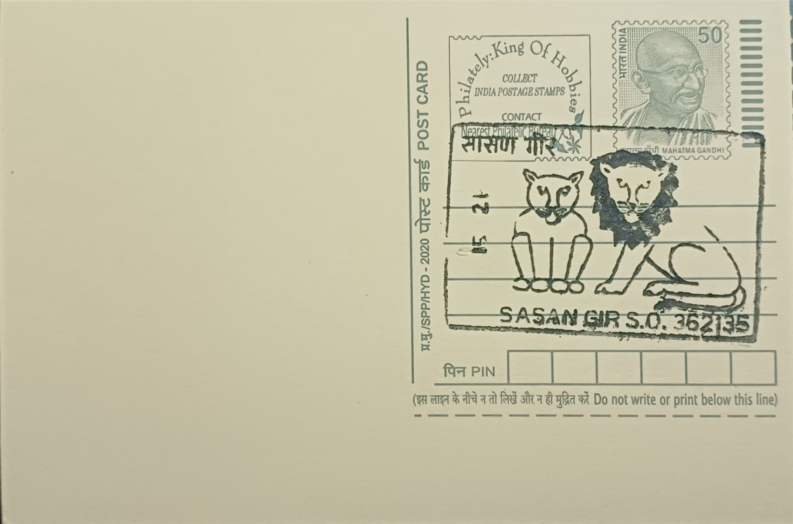

Asiatic Lions & Visit Sasan Gir Wildlife Sanctuary
એશિયાઈ સિંહ અને સાસણ ગીર વન્યજીવ અભયારણ્યની મુલાકાત લો


The Asiatic lion (Panthera leo persica) once ranged widely across the Middle East, Persia, and the Indian subcontinent, but by the early twentieth century unchecked trophy hunting and habitat loss had reduced the entire subspecies to a remnant population of a few dozen animals confined to the scrub forests of Saurashtra in Gujarat. Alerted by British colonial administrators to the species' imminent extinction, the Nawab of Junagadh, Mahabat Khan III, banned hunting within his private reserve in the Gir forest during the early 1900s and enforced a personal protection regime that allowed the surviving lions to hold on. This single act of rulership is generally credited as the reason the Asiatic lion survives in the wild anywhere today, rather than only in zoos.
The lion's status as the sole wild population of its subspecies on Earth makes it one of the most geographically confined large carnivores in the world, found nowhere else outside Gujarat despite once inhabiting territory stretching from Greece to eastern India. It functions simultaneously as an ecological keystone species within the Gir landscape's dry deciduous forest ecosystem and as a recognised emblem of Gujarati identity, appearing on state tourism branding and carrying Geographical Indication-linked recognition tied to the region. Its recovery is frequently cited internationally as one of the more successful large-carnivore conservation efforts of the twentieth century, a case study taught alongside recoveries of species such as the American bison and the southern white rhinoceros.
Formal protection was consolidated when the Gujarat Forest Department, continuing the Nawab's precedent after independence, declared the area a Lion Sanctuary on 18 September 1965; the reserve was further designated a national park in 1974. The protected complex today spans roughly 1,410 square kilometres, of which about 259 square kilometres form the strictly protected national park core and the remainder constitutes surrounding sanctuary buffer. Population counts, conducted periodically through direct observation exercises known as Poonam Avlokan, recorded only 177 lions in 1968, rising to 359 by 2005, 523 by 2015, and 674 in the 2020 estimation exercise that replaced a formally scheduled census postponed due to the COVID-19 pandemic, an increase of roughly 29 percent over five years.
A defining feature of the population's recent growth is its expansion well beyond the original sanctuary boundary: lions have established breeding territories across a wider Saurashtra landscape covering an estimated 30,000 square kilometres by 2020, up from about 22,000 square kilometres in 2015, with satellite groups now present along the Gujarat coast and in agricultural and semi-urban fringe areas outside any formal protected zone. This dispersal has brought lions into closer and more frequent contact with villages, highways, and open wells, producing a steady stream of human-lion encounters that the forest department manages through rapid-response rescue teams and awareness campaigns rather than relocation, since repeated proposals to establish a second wild population elsewhere in India, notably at Kuno in Madhya Pradesh, have stalled for decades over inter-state disputes.
Because the entire wild population descends from a genetic bottleneck of only a few surviving animals, the Gujarat Forest Department now runs active disease-surveillance and genetic-monitoring programmes, a concern sharpened by a 2018 canine distemper virus outbreak that killed over twenty lions in the sanctuary's eastern range. Sasan Gir itself has grown into a significant wildlife tourism hub organised around the village of Sasan, with jeep safaris, an interpretation zone, and a crocodile-breeding centre operated alongside the core lion habitat under the forest department's direct administration. The sanctuary's management today balances that tourism economy against the demands of a free-ranging carnivore population that has outgrown its original refuge, a tension the department continues to manage through zoning, buffer-area patrols, and ongoing habitat-corridor planning across the Saurashtra region.
| Date of Introduction | November 1, 1975 |
|---|---|
| Address | Sub Postmaster, |
| Sasan Gir SO, | |
| Junagadh (dt.), Gujarat - 362135. |